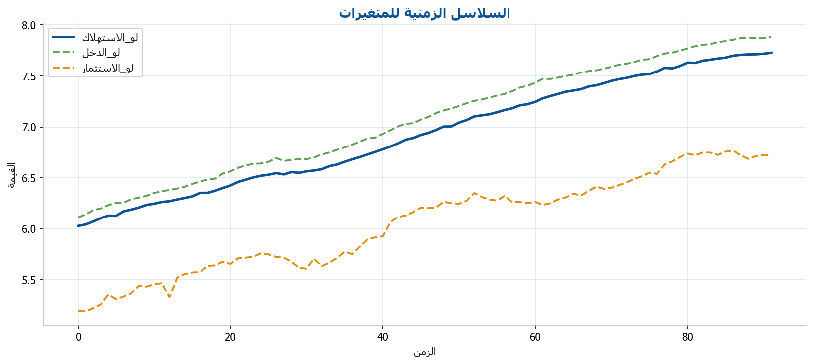
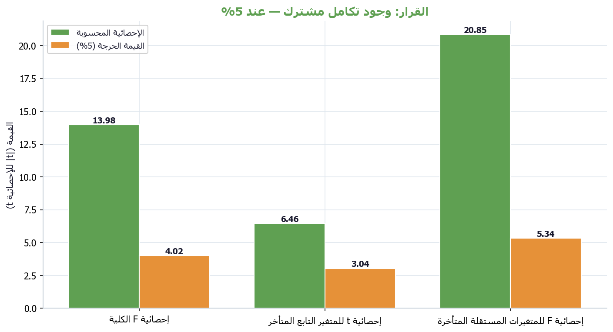
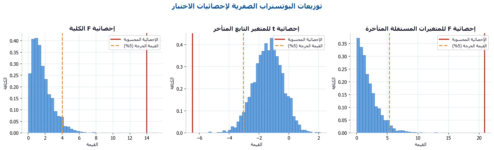
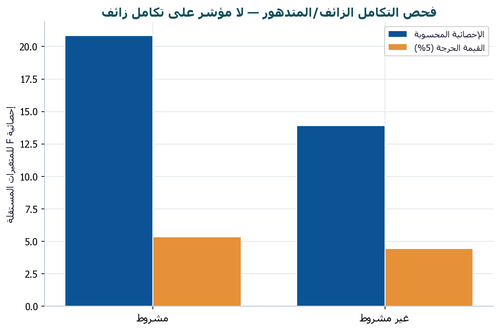

نظرة عامة
قياسي BootARDL مكتبة بايثون عربية أولاً لاختبار التكامل المشترك ARDL بالبوتستراب. الواجهة الأساسية والمخرجات والتقارير والرسوم كلها بالعربية، مع واجهة إنجليزية مطابقة تستدعي المحرّك المشترك نفسه. التصميم أحادي المعادلة وبدون VECM: تُولَّد التوزيعات الصفرية عبر بوتستراب لبواقي نموذج ARDL المشروط مع تثبيت المتغيرات المستقلة، فالاستدلال مشروط بالمتغيرات المرصودة.
pip install qiyasi-bootardl
pip install "qiyasi-bootardl[all]" # التقارير والرسوم والتسريعخلفية نظرية موجزة
يسمح نموذج الانحدار الذاتي للإبطاءات الموزّعة (ARDL) باختبار التكامل المشترك دون اشتراط أن تكون السلاسل من الرتبة نفسها؛ يكفي أن تكون متكاملة من الرتبة صفر I(0) أو الأولى I(1) (وليست I(2)). تُكتب صيغة تصحيح الخطأ المشروطة:
Δyₜ = α₀ + ρ·yₜ₋₁ + Σ₃ θ₃·x₃,ₜ₋₁
+ Σᵢ γᵢ·Δyₜ₋ᵢ + Σ₃Σᵢ δ₃,ᵢ·Δx₃,ₜ₋ᵢ + εₜويعتمد اختبار الحدود (Pesaran, Shin & Smith 2001) على ثلاث إحصائيات:
- إحصائية F الكلية: تختبر غياب علاقة المستوى طويلة الأجل (ρ = θ₁ = … = θₖ = 0).
- إحصائية t: تختبر معامل المتغير التابع المُبطأ (ρ = 0).
- إحصائية F للمتغيرات المستقلة: تُستخدم لكشف التكامل المشترك الزائف/المتدهور (McNown, Sam & Goh 2018؛ Sam, McNown & Goh 2019).
الحالات الحتمية (PSS 2001)
| الحالة | الثابت | الاتجاه الزمني |
|---|---|---|
| 1 | بدون | بدون |
| 2 | مقيّد | بدون |
| 3 | غير مقيّد | بدون |
| 4 | غير مقيّد | مقيّد |
| 5 | غير مقيّد | غير مقيّد |
تطبيق على بيانات حقيقية
نطبّق الاختبار على سلاسل الاقتصاد الكلي الحقيقية لألمانيا الغربية (Lütkepohl 2007): الاستهلاك والدخل والاستثمار، ربعية موسمياً معدّلة من 1960Q1 إلى 1982Q4 (92 مشاهدة، مليار مارك ألماني). نختبر العلاقة طويلة الأجل بين الاستهلاك (المتغير التابع) والدخل والاستثمار بعد أخذ اللوغاريتم الطبيعي.
import numpy as np
from qiyasi_bootardl import اختبار_ARDL_بالبوتستراب
from qiyasi_bootardl.datasets import تحميل_بيانات_ألمانيا
البيانات = تحميل_بيانات_ألمانيا().set_index("التاريخ")
لوغ = np.log(البيانات); لوغ.columns = ["لو_"+c for c in البيانات.columns]
النتيجة = اختبار_ARDL_بالبوتستراب(
لوغ, المتغير_التابع="لو_الاستهلاك",
المتغيرات_المستقلة=["لو_الدخل", "لو_الاستثمار"],
الحالة=3, أقصى_إبطاء=4, عدد_تكرارات_البوتستراب=2000, عشوائية=2024,
)
print(النتيجة.ملخص())
القرار النهائي
وجود تكامل مشترك — عند 5%
تتفق الإحصائيات الثلاث (F الكلية، t، F للمتغيرات المستقلة) على رفض فرضية عدم وجود تكامل مشترك. توجد علاقة توازنية طويلة الأجل بين الاستهلاك والدخل والاستثمار. يمكن المضي قُدماً في تقدير معاملات الأجل الطويل ونموذج تصحيح الخطأ (ECM) لتقدير سرعة التعديل نحو التوازن.
(الحرجة 5% = 4.02)
(الحرجة 5% = -3.04)
(الحرجة 5% = 5.34)

جداول النتائج
إحصائيات الاختبار
| الإحصائية | القيمة_الاحتمالية_التقاربية | |
|---|---|---|
| إحصائية F الكلية | 13.9765 | 0.0000 |
| إحصائية t للمتغير التابع المتأخر | -6.4602 | 0.0000 |
| إحصائية F للمتغيرات المستقلة المتأخرة | 20.8496 | 0.0000 |
القيم الحرجة بالبوتستراب
| القيمة_الحرجة_F_الكلية | القيمة_الحرجة_t | القيمة_الحرجة_F_المستقلة_مشروط | القيمة_الحرجة_F_المستقلة_غير_مشروط | |
|---|---|---|---|---|
| 10% | 3.3505 | -2.6611 | 4.3221 | 3.5061 |
| 5% | 4.0233 | -3.0365 | 5.3397 | 4.4615 |
| 1% | 5.6554 | -3.7422 | 8.0939 | 6.9190 |
القيم الاحتمالية بالبوتستراب
| القيمة_الاحتمالية_بالبوتستراب | |
|---|---|
| إحصائية F الكلية | 0.0005 |
| إحصائية t للمتغير التابع المتأخر | 0.0000 |
| إحصائية F للمتغيرات المستقلة المتأخرة | 0.0000 |
معاملات النموذج المشروط
| المعامل | الخطأ_المعياري | إحصائية_t | القيمة_الاحتمالية | |
|---|---|---|---|---|
| const | 0.0424 | 0.0119 | 3.5713 | 0.0006 |
| لو_الاستهلاك.l1 | -0.3338 | 0.0517 | -6.4602 | 0.0000 |
| لو_الدخل.l1 | 0.3345 | 0.0523 | 6.4004 | 0.0000 |
| لو_الاستثمار.l1 | -0.0136 | 0.0114 | -1.1914 | 0.2371 |
| D_لو_الاستهلاك.l1 | -0.3300 | 0.0790 | -4.1793 | 0.0001 |
| D_لو_الاستثمار.l1 | 0.0368 | 0.0202 | 1.8221 | 0.0723 |
| D_لو_الاستثمار.l2 | 0.0615 | 0.0186 | 3.3105 | 0.0014 |
| D_لو_الاستثمار.l3 | 0.0510 | 0.0185 | 2.7487 | 0.0074 |
| D_لو_الدخل | 0.4298 | 0.0713 | 6.0299 | 0.0000 |
| D_لو_الاستثمار | 0.0641 | 0.0181 | 3.5383 | 0.0007 |
الحدود التقاربية (PSS 2001)
| F_الحد_الأدنى_I0 | F_الحد_الأعلى_I1 | t_الحد_الأدنى_I0 | t_الحد_الأعلى_I1 | |
|---|---|---|---|---|
| 1% | 4.1300 | 5.0000 | -3.4300 | -4.1000 |
| 2.5% | 3.5500 | 4.3800 | -3.1300 | -3.8000 |
| 5% | 3.1000 | 3.8700 | -2.8600 | -3.5300 |
| 10% | 2.6300 | 3.3500 | -2.5700 | -3.2100 |
التوزيعات الصفرية بالبوتستراب وفحص التكامل الزائف


ملاحظات منهجية
- القيم الحرجة لاختبار PSS المضمّنة تقاربية للراحة فقط؛ القرار الأساسي يعتمد على القيم الحرجة بالبوتستراب.
- البوتستراب يُثبّت المتغيرات المستقلة X، فالاستدلال مشروط بها (مقايضة التصميم بدون VECM).
- تأكّد أن المتغيرات لا تتجاوز رتبة التكامل I(1) (لا وجود لـ I(2)) قبل الاعتماد على النتائج.
المراجع
- Pesaran, M. H., Shin, Y., & Smith, R. J. (2001). Journal of Applied Econometrics, 16(3), 289–326.
- Sam, C. Y., McNown, R., & Goh, S. K. (2019). Economic Modelling, 80, 130–141.
- McNown, R., Sam, C. Y., & Goh, S. K. (2018). Applied Economics, 50(13), 1509–1521.
- Narayan, P. K. (2005). Applied Economics, 37(17), 1979–1990.
- Lütkepohl, H. (2007). New Introduction to Multiple Time Series Analysis. Springer.